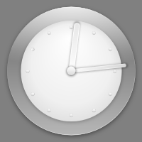
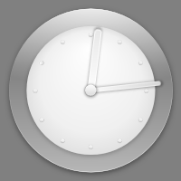

QML Plugin Example
This example creates a C++ plugin extension by subclassing QQmlExtensionPlugin.

To run this example, use the following commands on the prompt:
> qmake > make > qmlscene -I imports plugins.qml
Files:
This example creates a C++ plugin extension by subclassing QQmlExtensionPlugin.

To run this example, use the following commands on the prompt:
> qmake > make > qmlscene -I imports plugins.qml
Files: